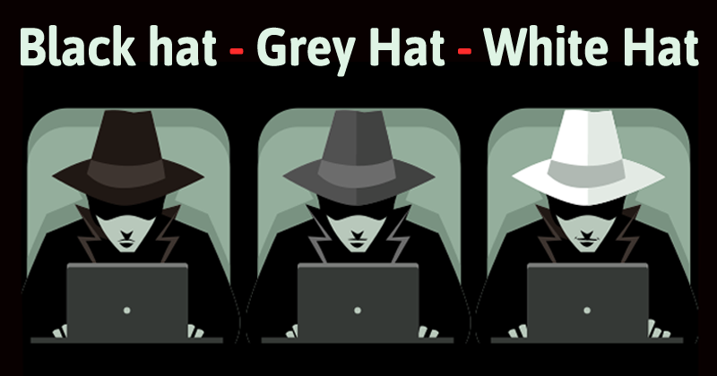

Lets get to know about the types of Hackers in the world of Cybersecurity!
There are three basic types of hackers. They are Black Hat Hackers, Gray Hat Hackers and White Hat Hackers.
In this article, we will read about how to categorize the hackers under the aforementioned categories. We'll also read in detail about what each category of Hacker does.
Black Hat Hackers: Black-hat Hackers are also known as an Unethical Hacker or a Security Cracker. These people hack the system illegally to steal money or to achieve their own illegal goals. They find banks or other companies with weak security and steal money or credit card information. They can also modify or destroy the data as well. Black hat hacking is illegal.
Gray Hat Hackers: Gray hat Hackers are Hybrid between Black hat Hackers and White hat hackers. They can hack any system even if they don't have permission to test the security of the system but they will never steal money or damage the system.
In most cases, they tell the administrator of that system. But they are also illegal because they test the security of the system that they do not have permission to test. Grey hat hacking is sometimes acted legally and sometimes not.
White Hat Hackers White hat Hackers are also known as Ethical Hackers or a Penetration Tester. White hat hackers are the good guys of the hacker world.
These people use the same technique used by the black hat hackers. They also hack the system, but they can only hack the system that they have permission to hack in order to test the security of the system. They focus on security and protecting IT system. White hat hacking is legal.